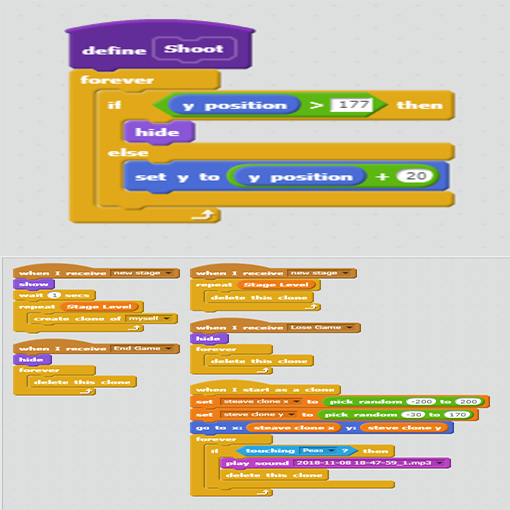

Portfolio
Doodle Jump

You are stuck in a never ending hop, until you reach to the end. I implemented the y cordinate of the sprite as your score.
The randomize happens during the making of every stage and everytime an enemy spawn. As you beat a stage there will be more enemy
that will be generate depending on the stage you are at. You can lose by touching the enemy or falling to the bottom of the game. To
win you will need to reach to the top of the game ten time. The reason I made the game is because I was finding a way in order to make
a spite jump so I decided to create a game all about jumping. I was able to find a way to create a sprite to constanly jump and shoot out
sprite everytime but I understand the concept of cloning and making them having their own cordination. If I had more tiem i would be able
to implement an attack for the enemy.

The way that an enemy is created is simply because algorithm. The computer does all the math so I don't have to write every indivisual code but
instead leave it with a variable and it will solve it for me.
One Punch
In the story, One Punch, a character, Saitama, is bored to death because he became the strongest man alive. He then seeks worthy opponent and found two opponent which is Donald Trump and Kirby. Saitama end up disappointed because there is no one in the universe that is an honorable opponent that can scratch him.
An iterative in my program is having to constantly write, trying, fixing and repeat. It was difficult to fix because of all the choice you can make. Having to make an option for what the people want was difficult because of one mistake in the program and it will not come out the way you want it. The incremental is to write down the whole code because there's an iterative of writing, trying, fixing, and repeat. Another thing is having to decide how you are going to write. I have to wonder to choose a for loop, while loop, break, and etc. There are all sort of code that I can use and end up with the same outcome as if anyone using a different code with the same outcome. Having everything organized makes everything simpler because it is labeled and from top to bottom. Having them into a function allows the ability to just type just the def down and it will run it. The two I like was pokemon and Phantom Blood because of Pokemon was similar to the actual game and Phantom Blood with the plot twist of wanting wealth.